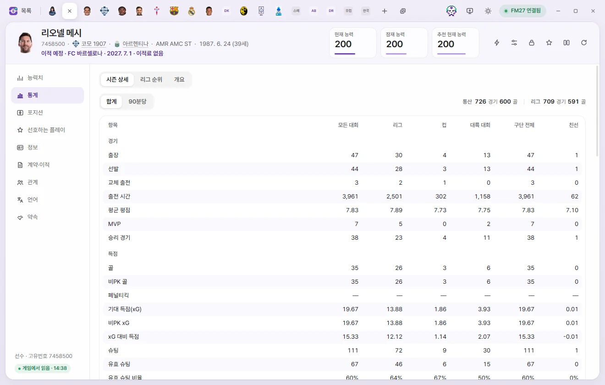
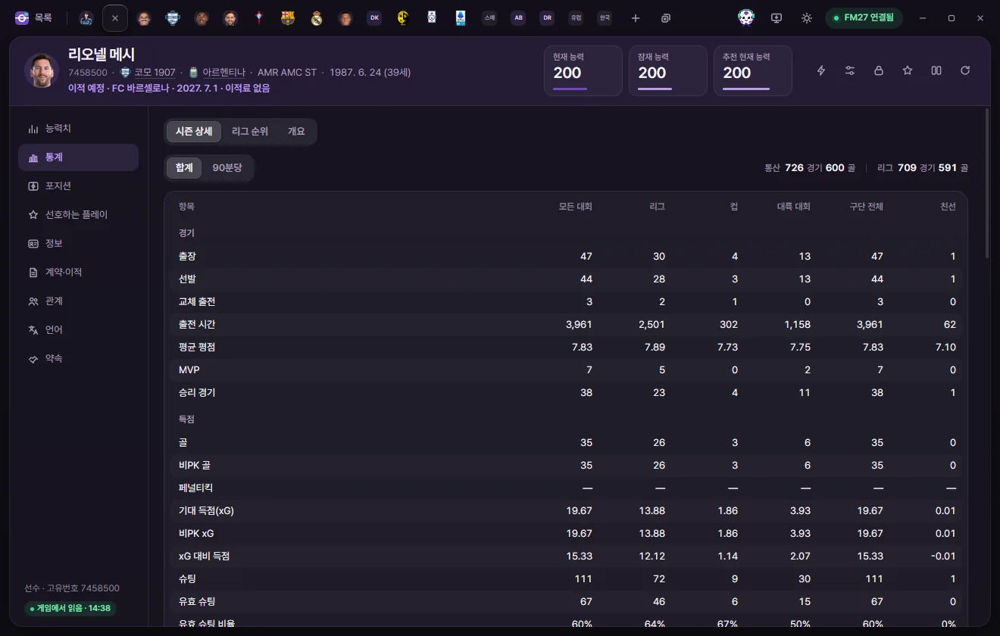
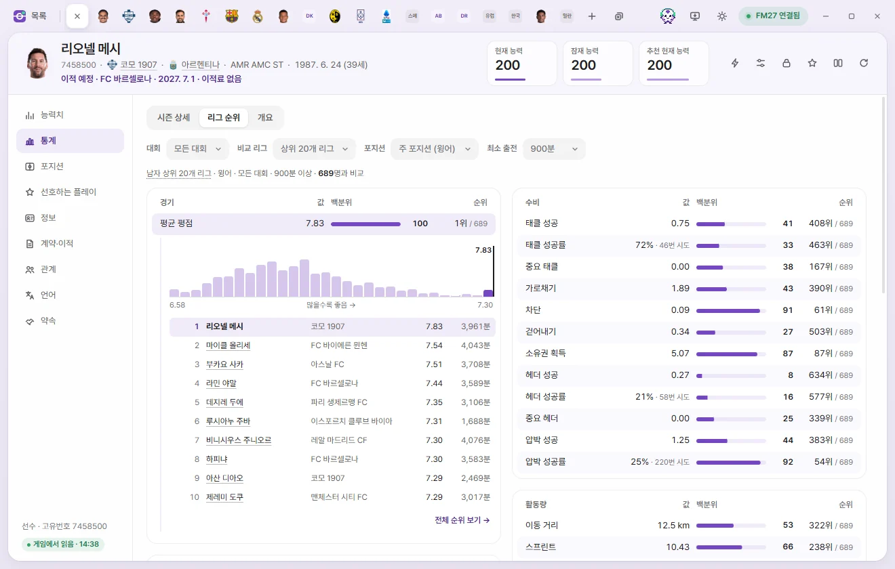
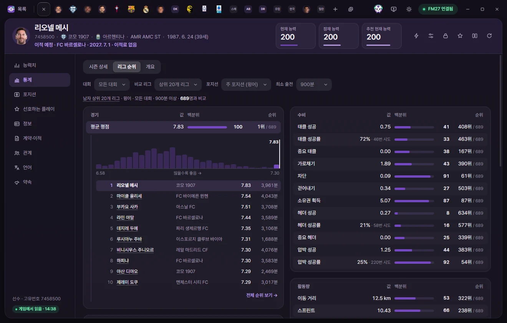
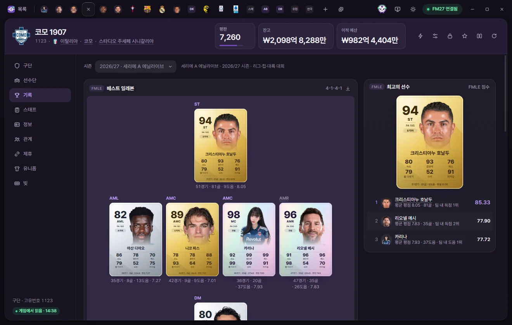
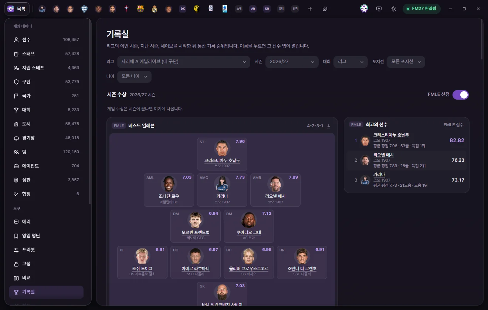

Tools
Stats, Player Cards & Record room
Covers the Stats page in player tabs, FMAX player cards and PNG exports, Club records in club tabs, and league-wide rankings in the Record room. Everything on these screens only reads from the game.
Every screen covered on this page only reads from the game—nothing here edits your save. The only exceptions are choosing a custom photo on a player card and turning on 'Use in game'.
Player Stats page
Click Stats on the left side of a player tab. At the top are three tabs: Season details, League rankings, and Overview. Whichever tab you viewed last opens automatically for the next player too.



Season details
Shows This season’s stats in columns by competition. Columns only appear for competitions the player has played in.
| Column | Meaning |
|---|---|
| All competitions | Combined total across League, Cup, Continental, and International matches |
| League / Cup / Continental / International / Friendly | Stats from that competition type |
| Overall club | Separate club total tracked by the game |
- Total / Per 90: Pick Per 90 to divide counting stats by the player's Playing time in that competition and show per-90-minute rates. Percentages, ratings, and Playing time stay as they are.
- Rows are grouped into Matches, Scoring, Chance creation, Passing, Defending, Work rate, and Mistakes & discipline. Goalkeepers get an extra Goalkeeping group (goals conceded, clean sheets, and xG prevented).
- Career appearances and goals, along with career league appearances and goals, appear in the top right.
Career history: Below the table, season-by-season rows mirror the game's history screen. Appearances, goals, assists, Player of the Match awards, and rating show league figures; click a row to expand the competition breakdown for that season. The 'Transfer' column shows how the player joined that club (transfer fee, loan, or Free transfer).
Career history is fetched directly from the game's history screen. If FMAX is running in read-only mode or the game is running as administrator, 'Could not load career history' appears instead.
Awards: Season awards from the game are listed newest first, including second- and third-place finishes where the game records them. If there are more than 12, click Show all. Team of the Year entries only exist for seasons since the save started.
Comparison settings
League rankings and Overview compare the player against peers in the same position. Use the top bar to choose the comparison pool—these settings apply across all players.
| Field | Options |
|---|---|
| Competition | All competitions, League, Cup, Continental, International, Overall club, Friendly |
| Compare leagues | Top 20 leagues, Same league only, All leagues (men’s and women’s pools are separated automatically to match the player) |
| Position | Primary position (auto), or Goalkeeper, Centre-back, Full-back, Defensive/central mid, Winger, Attacking mid, Striker |
| Min. minutes | No limit, or 450 to 2,700 mins (defaults to 900 mins) |
Above the table, the active pool is summarized as '… · n players compared'. If a player falls short of Min. minutes or lacks enough recorded stats, no grade is given and FMAX explains why.
League rankings
Shows the value, Percentile, and rank for every stat.
- Value: Counting stats are shown Per 90; percentages stay as percentages and list the number of attempts.
- Percentile: The percentage of players in the comparison pool below this player. Ties count as half.
- Lower is better: For mistakes, Possession lost, fouls, Yellow & red cards, Offsides, and goals conceded, a higher percentile means fewer committed or conceded.
- Last season column: When the game has stats from the same competition last season, the previous value appears beside an arrow—green for improved, red for worse.
Click any row to expand a distribution bar across all compared players, the top 1–10, and the ranks right around this player. Click View full rankings → to open the Record room with closely matching filters.



Overview
At the top are the player card, a summary strip for this season (appearances, Playing time, goals, assists, Average rating, and xG & xA—or clean sheets & xG prevented for goalkeepers), and card details. Below that, in order:
| Section | Details |
|---|---|
| Season report card | A grade and 'Top n% in position'. Grades are based on percentile within the comparison pool: 90+ A+, 80+ A, 65+ B, 45+ C, 25+ D, and below 25 F. Shows the score and weight for each area (scoring, Chance creation, pressing, etc.); click any area to expand its stats and percentiles. Low-sample percentages are pulled toward 50 |
| Percentile profile | A radar chart of 6–8 key stats suited to the player's position |
| Two stat panels | Distribution and percentiles for Finishing and Chance creation (shot-stopping and build-up for goalkeepers) |
| Compare two stats | A scatter plot of compared players. Pick stats for the X-axis and Y-axis, and click Swap axes to flip them. Hover over a dot to preview the player, or click to open their tab. Next to the chart are the 6 Most similar players across those two stats |
| Recent seasons | Club, appearances, goals, assists, rating, Ability score, and Report card for this season and the previous 3 seasons |
| Season trends | Plots Ability score, Average rating, goals, assists, or xG across seasons as a line chart. A hollow dot marks the current season in progress |
| Positions played | A pitch graphic shaded by appearances at each spot, filterable by season and club or International |
Past seasons' Ability scores and Report cards come from snapshots FMAX saved during those seasons. Save season-end records must be turned on in Settings; any season where FMAX wasn't running shows 'No record'. For seasons before the save started, the game only holds appearances and goals.

Player cards
Player cards generated by FMAX appear in Stats › Overview, on the Compare screen, in Card view on a club tab's squad table, and in Best Eleven lineups under Club records.
- Main number (Ability score): A 1–99 score calculated from Current Ability (CA), RCA (Recommended Current Ability), and Primary position fit, with position and PA shown underneath.
- Tier: Determined by Ability score brackets, identical across every save.
| Tier | Ability score |
|---|---|
| Legend | 95–99 |
| S | 88–94 |
| A | 78–87 |
| B | 65–77 |
| C | 50–64 |
| D | 1–49 |
- Six stats at the bottom: Raw attribute averages scaled to 1–99 without CA weighting (Pace, Finishing, Passing, etc. for Outfield players; Reflexes, Handling, etc. for goalkeepers). Because they aren't weighted by CA, the average of the six numbers can differ from the main Ability score. Hover over each stat in the card details under Stats › Overview to see which attributes go into it.
- Season form card: A Season report card score of 80 or above turns the card into a purple 'Season form' card.
- The bottom row shows this season's appearances, goals, assists, and rating (clean sheets and xG prevented for goalkeepers).
- Legend cards tilt and catch the light as you move your mouse over them.
Save as PNG
- Single card: Click Save as PNG in the card details header under Stats › Overview. FMAX saves
fmax-card-ID.pngto your Downloads folder, and you can open it via Show in folder on the notice. - Whole squad: In a club tab's squad table, click Card view to display the squad as cards. Sort By tier / By position and click Save as PNG to export the entire squad as one image. Click List view to switch back to the table.
Player faces
The 'Face' line in the card details shows where the current portrait comes from.
| Face | Meaning |
|---|---|
| Facepack | Found in an installed graphics pack |
| Photo chosen in FMAX | A photo you picked, with Change photo and Remove photo options |
| None · Silhouette | Shows a position-colored silhouette and shirt number. Click Choose photo to add a picture |
Choose photo accepts PNG or JPG files under 8 MB. By default, a chosen photo only shows inside FMAX.
Use in game: This switch appears only when you have chosen a photo. Turn it on to place the photo inside an FMAX folder under the game's graphics folder without touching any installed facepack. Reload the skin in the game to see it as the player's portrait. Turning the switch off or clicking Remove photo removes it from the game folder too.
Club records
Click Record on the left side of a club tab. FMAX selects the Best Eleven and Best players from the first team's stats across League, cup and continental competitions.


- Season: Pick an individual season (shown alongside that season's league name) or All-time since save start.
- Best Eleven: A pitch filled with player cards. FMAX uses the card saved at the end of that season, or the player's current card if none was saved. Substitutes appear in the row underneath.
- In Career (all-time) view, choose between Legends XI (by cumulative contribution at the club) and Peak season XI (by each player's single best season at this club).
- Best players: 1st to 3rd place by FMAX score, along with the reasons they were chosen.
- The cards below list category rankings such as goals and assists.
- The download button in the pitch header saves that lineup as a PNG in your Downloads folder.
Selection rules: For a single season, only players who played at least one-third of the team's match minutes qualify; for all-time lineups, only seasons where a player met that threshold count. The formation follows the positions the team actually used (players' appearances by position). If there aren't enough qualifiers for those spots, FMAX picks whichever of 61 formations gives the highest total score. Seasons without positional appearance data are labeled 'No position records' and place players in their Primary position. Only seasons since the save started are available.
If 'No records for this club yet' appears, wait until the first team plays League fixtures after the save starts.
Record room
Record room under Tools in the left sidebar shows league-wide stat rankings. Click any player's name to open their tab.


Filters
| Field | Options |
|---|---|
| League | Top 20 men’s leagues, Top 20 women’s leagues, All leagues, or a single league. Click the field to open a searchable list—type part of a league or country name (case and accents don't matter), and press Enter to pick the top match. My club’s league and recently picked leagues appear first at the top. |
| Season | This season, past seasons, All-time since save start |
| Competition | League, All competitions, Cup, Continental, International |
| Position | All positions, Forwards, Midfielders, Defenders, Goalkeeper |
| Age | All ages, U21, U23 |
Season awards
- Shows official season awards and Team of the Year selections awarded by the game once a season finishes.
- Turn on FMAX picks to include FMAX's own Best players and Best Eleven. Players are scored from Average rating and peer-compared stats (the Report card score from the Stats page) weighted with Playing time, and must have played at least one-third of their team's match minutes to qualify. Best Eleven uses whichever of 61 formations produces the highest total score, and for a season in progress it uses stats recorded so far.
Category cards and rankings
- Cards for goals, assists, Goal contributions, Chance creation, Average rating, appearances, and clean sheets highlight the top performers. Click a card title to switch the rankings table below to that stat.
- In the rankings table, pick a stat and toggle between Total / Per 90. Columns show rank, player, club, value, appearances, minutes, and Age. The top 100 appear first, and the button at the bottom loads 100 more at a time up to 500.
- Min. minutes: For Per 90, average, and percentage rankings, the default minimum to qualify is one-third of the team's match minutes for a single season, or 2,700 minutes for all-time. You can also set it manually.
- Players who changed clubs mid-season have their stats combined across clubs and show the club where they played the longest ('+n more').
- Dimmed names are players no longer in the game (such as retired players); their stats come from season records saved by FMAX.
- Click the download button on any card or pitch header to save a PNG.
This season's stats are read live from the game, while past seasons come from the history files written by the game. Only seasons since the save started are available, and FMAX lets you know if past season stats are missing because a history file could not be read.